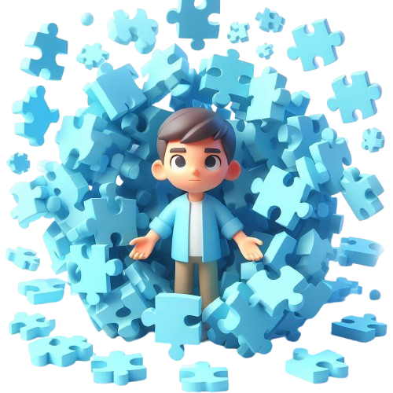

APLICATIVO AUTILY.
O Autily é um aplicativo que ajuda pais de crianças autistas no monitoramento e apoio ao desenvolvimento de seus filhos. Com uma interface intuitiva, permite registrar atividades, criar rotinas personalizadas e acessar uma comunidade de suporte, promovendo um ambiente seguro e compreensivo.

SOBRE O AUTISMO.
Você sabia que o autismo tem diferentes níveis?
Autismo
Leve.
Este é o mais brando e é caracterizado por dificuldades na interação social e comunicação, bem como comportamentos repetitivos e interesses restritos.
Autismo Moderado.
Este segundo nível do TEA é considerado moderado e se caracteriza por dificuldades significativas na comunicação e interação social.
Autismo Severo.
Além de apresentarem as características já descritas nos níveis 1 e 2, este também é caracterizado por dificuldades significativas de comportamentos repetitivos.

MUITO PRAZER, SOU A IA DO AUTILY.
Em um mundo cada vez mais conectado e digital, a eficiência e a personalização são fundamentais para o sucesso de qualquer aplicativo. É aqui que a inteligência artificial (IA) do nosso site Autily se destaca, oferecendo uma experiência única e intuitiva para os usuários.
A IA do Autily é projetada para entender as necessidades individuais dos usuários, fornecendo instruções e assistência personalizadas. Isso não só melhora a experiência do usuário, mas também garante que eles possam aproveitar ao máximo as funcionalidades do aplicativo.